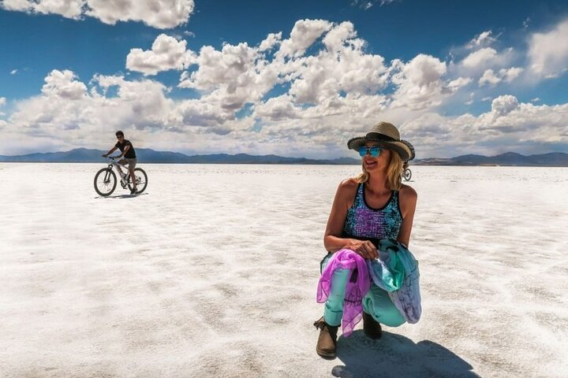
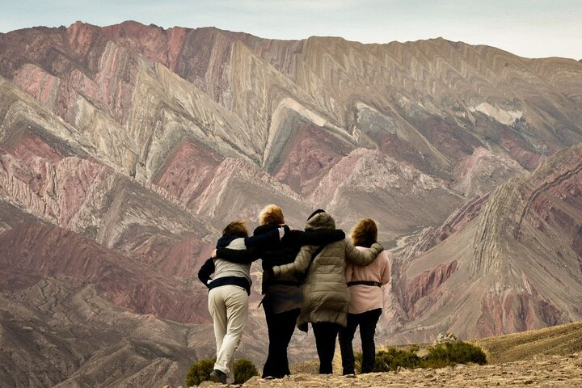
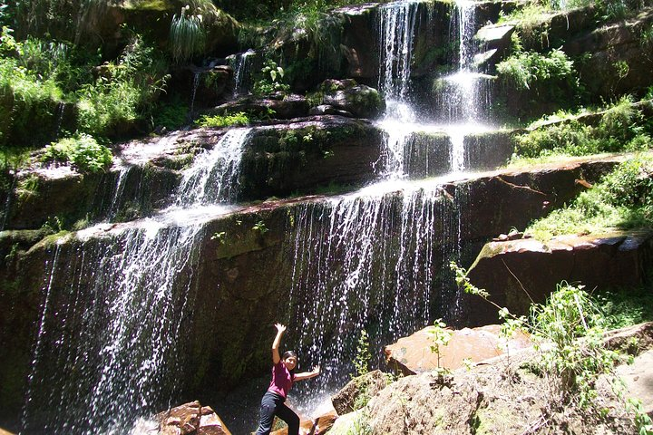

Entertainment
La región de La Quebrada de Humahuaca no posee sitios de entretenimiento como cines, teatros, etc. En cambio, te dejamos algunos tours que podes realizar.
| Imágen | Tour | Descripción | Precio |
|---|---|---|---|
|  | Tour a las Salinas Grandes y Purmamarca con Trekking Coloraditos | Un paseo de altura que nos lleva a conocer el salar más visitado del Norte Argentino, atravesando los pueblos más pintorescos de la zona. Deleita tu espíritu aventurero con los paisajes más llamativos de la Puna Argentina!! |
desde $ 22.757,99 por adulto |
|  | Safari al Mirador Del Hornocal | Declarada Patrimonio Cultural y Natural de la Humanidad, la Quebrada de Humahuaca es una zona árida de belleza paisajística y cultural. |
Por grupo (hasta 4) x $ 120.483,49 |
|  | De la Quebrada a las Yungas por el Qhapac Ña |
Variedad de paisajes y ambientes desde los colores de la Quebrada, alta montaña y la selva de Yungas. Se vive la experiencia de transitar a pie por la antigua senda de Los Incas. Se pueden compartir experiencias con las comunidades locales. Caminata por la selva de Yungas para visitar las Termas del Jordán. Se puede bañarse en este sitio termal agreste. se pueden observar vestimentas típicas, bordadas con colores típicos. Fotografías en cascadas y caminos de montaña espectaculares. Se conoce un parque nacional que preserva la Selva de Yungas. Se transita por uno de los caminos de montaña mas largos del país. |
desde $ 240.966,99 por adulto |